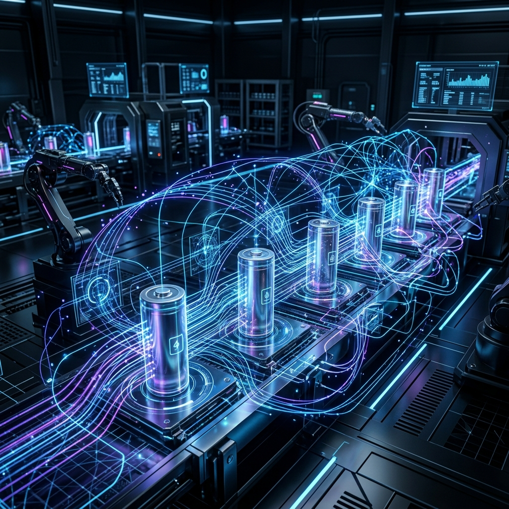

Open for Opportunities
Hi, I'm Sowjanya
Research Scientist focused on Industrial IoT, Digital Twins, and Data Spaces. Bridging the gap between production floors and scalable cloud ecosystems.

Experience
12/2023 - Present
Research Scientist, IT Systems
Fraunhofer IPA, Stuttgart
- Designed and implemented industrial digitalization workflows connecting data sources, metadata catalogues, digital tools, and digital twin systems.
- Developed digital twin and data-space concepts for KI Data Platform using AAS, BaSyx/FA3ST, DCAT-AP, and Manufacturing-X/Catena-X principles.
- Built time-series abstraction workflows for H2Giga using InfluxDB, MQTT/event triggers, BaSyx, and IDTA Time Series Submodels.
- Implemented IT/OT data integration for ExELPro using SmartUnifier, OPC UA, InfluxDB, edge devices, and ML-ready production datasets.
- Connected production, energy, and sustainability data for DigiBattPro 4.0 with LCA/PCF workflows.
04/2023 - 08/2023
Working Student, Smart Building IoT
ARENA 2036 & SPIE, Stuttgart
- Developed end-to-end IoT data workflows for smart building and industrial monitoring, enabling sensor data to be collected, processed, and visualized.
- Built Azure-based data handling workflows to collect, process, and structure sensor data.
- Created Grafana dashboards for real-time visualization of environmental conditions and sensor trends.
05/2022 - 10/2022
Intern, IoT Edge Software
Robert Bosch Power Tools GmbH, Stuttgart
- Implemented over-the-air software rollout for IoT edge devices, enabling remote updates via Bosch IoT Suite.
- Developed standardized MQTT-based edge-to-cloud communication workflows for software-updatable IoT devices.
- Built software-updatable device feature models using Eclipse Vorto and Hawkbit.
Featured Projects

DigiBattPro - Dynamic PCF Pipeline
A project portfolio entry describing battery-production use cases for dynamic PCF, clean-room energy data collection, and FA3ST/AAS integration.
AAS
Xetics/MSB
Grafana
PCF
AAS-to-DCAT Piveau Harvester
A toolchain for querying FA3ST AAS Registry metadata, transforming AAS descriptors into DCAT-AP datasets, and publishing into Piveau.
DCAT-AP
Piveau
FA3ST
Data Spaces
ExELPro EMS Data Pipeline
A battery-production experiment management data pipeline connecting SmartUnifier, Edge-PC, OPC UA, InfluxDB v2, and cloud/ML services.
InfluxDB
SmartUnifier
OPC UA
MQTT
AAS Time-Series Abstraction Layer
Backend service converting InfluxDB time-series data into standardized IDTA Time Series Submodels via BaSyx and Submodel Repository APIs.
BaSyx
IDTA
Python
Technical Skills
Industrial IoT
MQTT
OPC UA
5G/IIoT
InfluxDB
Telegraf
AAS & Digital Twin
Asset Administration Shell
BaSyx
FA3ST
IDTA
Submodel API
Backend & Integration
Python
REST APIs
SmartUnifier
Edge-PC
Docker
Data Spaces & Cloud
Microsoft Azure
Piveau
DCAT-AP
Manufacturing-X
EDC
Publications
An Automated Workflow for the PCF Calculation of Battery Cells
Leveraging Digital Twins for Real-Time Environmental Monitoring in Battery Manufacturing
CCPT conference - Sovereign Data Spaces and Interoperable Digital Twins for Automated PCF
Education
M.Sc. Information Technology
University of Stuttgart, Germany
B.Eng. Electronics and Communication
Alliance University, Bengaluru